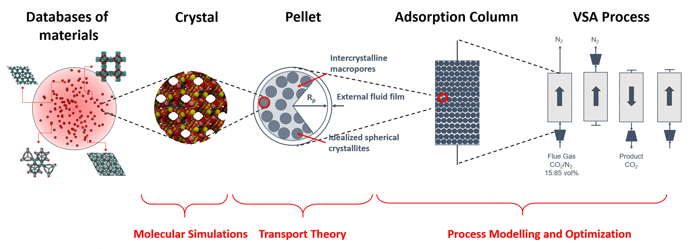

The mission of our group is to accelerate the deployment of efficient technologies for carbon capture, water purification,
energy from waste heat and separations.
We achieve this by developing the fundamental understanding of the processes on a molecular level, through the
integration of this knowledge in the process design and material development, and through the development of new computational methods and algorithms.
